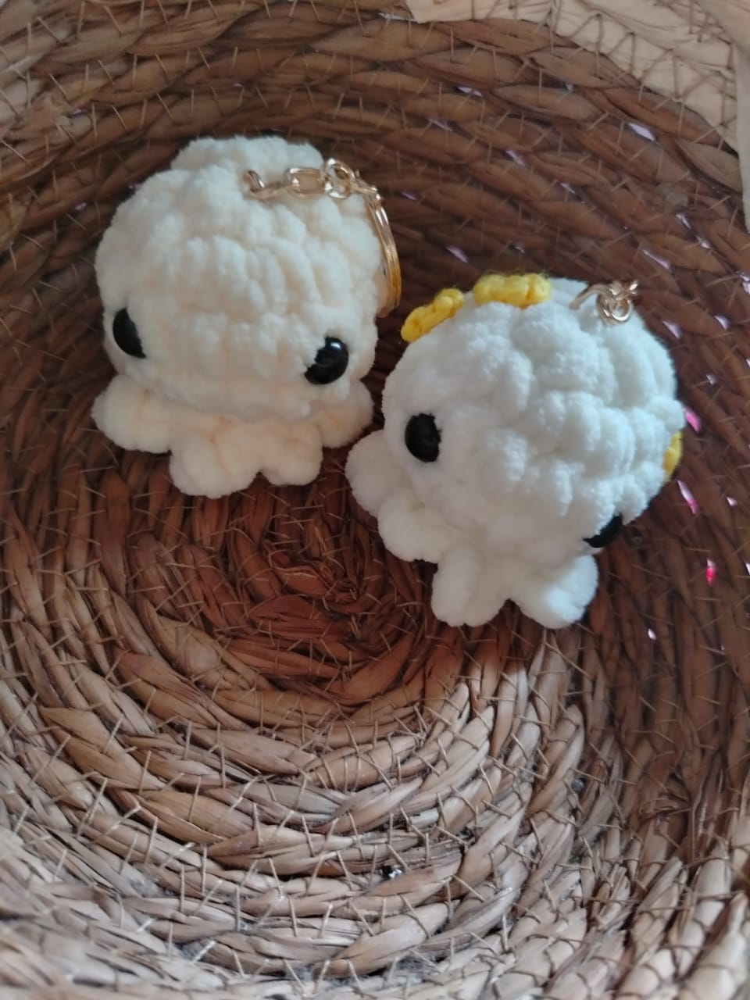
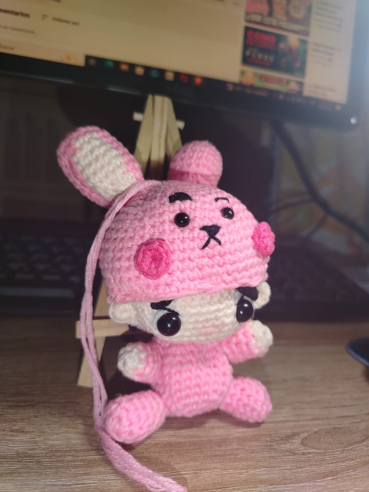
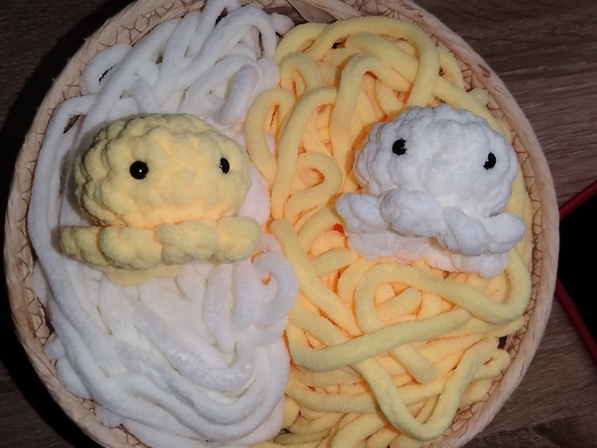
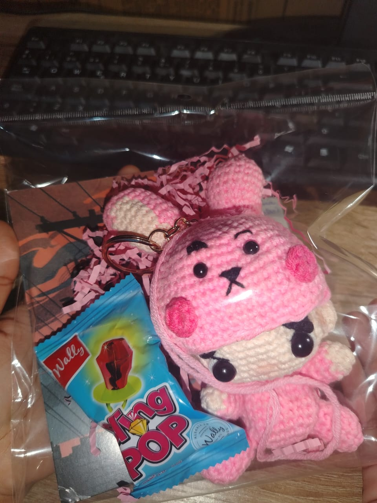
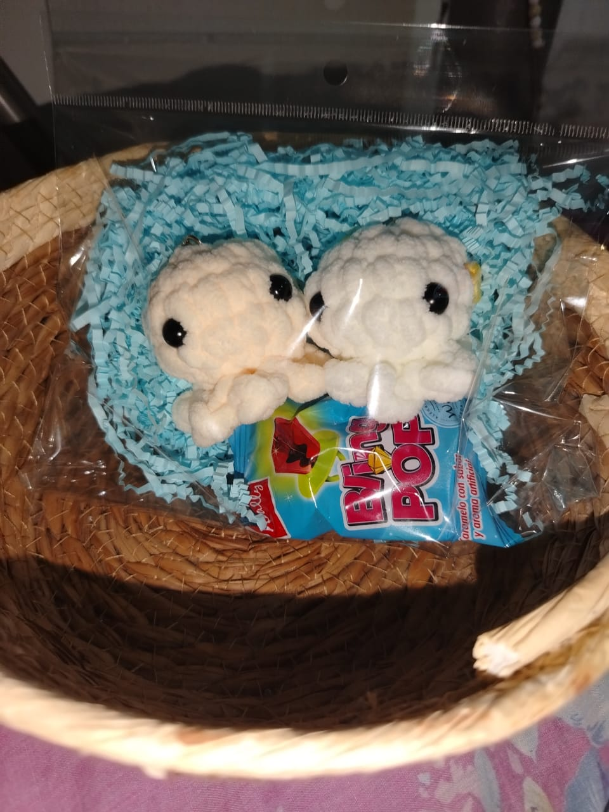
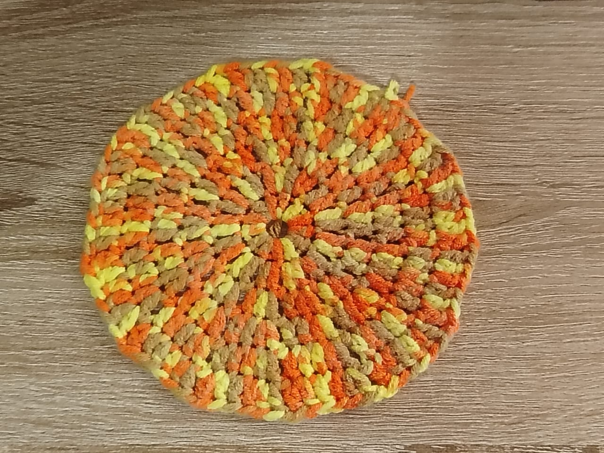

Pulpitos llavero
De felpa suave, para llevar a todos lados.
Cargando...
Tejidos Yaret
hecho a mano, puntada a puntada
Amigurumis únicos, suaves y con personalidad. Para regalar, coleccionar o consentirte.
lo que sale de mis agujas

De felpa suave, para llevar a todos lados.

Se quita el gorrito de orejas largas.

En amarillo, blanco y los colores que quieras.

Llavero en bolsita con detalle dulce.

Los empaco con papel picado y paleta.

Tejidos en espiral, en tus colores.
así se teje y así se pide
Me escribes por WhatsApp y empezamos con tu idea.
Elegimos colores, tamaño y detalles juntos.
Lo tejo vuelta por vuelta, con relleno suave.
Cierro, remato y te lo envío listo para abrazar.
lo que dicen
Quedó idéntico a mi perrito. Lloré de la emoción.
Mariana
El regalo perfecto, mi sobrina no lo suelta.
Carlos
Súper detallista y rápida. 100% recomendada.
Sofía
Escríbeme y te respondo en un ratito.
Chatear por WhatsApp